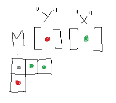
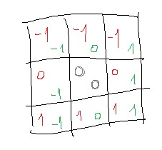

#include#include #include #include #include using namespace std; /* Visitare alexnett.github.io/PAGES/GOL/GOL.html per documentazione ▀ ▀ ▀▄▄▄▀ */ #define DARKGRAY SetConsoleTextAttribute(GetStdHandle(STD_OUTPUT_HANDLE), 8); #define LIGHTRED SetConsoleTextAttribute(GetStdHandle(STD_OUTPUT_HANDLE), 12); #define YELLOW SetConsoleTextAttribute(GetStdHandle(STD_OUTPUT_HANDLE), 14); #define WHITE SetConsoleTextAttribute(GetStdHandle(STD_OUTPUT_HANDLE), 15); #define TL char(218) // TOP LEFT #define TR char(191) // TOP RIGHT #define BL char(192) // BOTTOM LEFT #define BR char(217) // BOTTOM RIGHT #define HL char(196) // HORIZONTAL LINE #define VL char(179) // VERTICAL LINE #define CB char(254) // BIG CUBE | ALIVE CELL #define NN char(250) // SMALL CUBE | DEAD CELL int x = -1; // cordinate int y = -1; // cordinate int ROWS = 15; // quantità di righe nel canvas int COLS = 15; // quantità di colonne nel canvas char** cWorld; // canvas // Start screen void CMD_re_start(bool first) { system("cls"); YELLOW cout << "CMD: \n"; if (first) { WHITE cout << "Type ["; LIGHTRED cout << "?"; WHITE cout << "] for command list. \n\n"; } } // Prima dell'input stampare un '>' void CMD_input(char &c) { YELLOW cout << ">"; WHITE cin >> c; } // lista comandi void help() { LIGHTRED cout << "\n Net's Corway's game of life - v4.min\n\n"; YELLOW cout << " " << char(223) << ' ' << ' ' << char(223) << "\n"; cout << " " << char(223) << char(220) << char(220) << char(220) << char(220) << char(223) << "\n\n"; WHITE cout << " ["; LIGHTRED cout << "?"; WHITE cout << "] Prints aviable commands \n"; cout << " ["; LIGHTRED cout << "z"; WHITE cout << "] Set size of the canvas \n"; cout << " ["; LIGHTRED cout << "d"; WHITE cout << "] Draw in the canvas \n"; cout << " ["; LIGHTRED cout << "s"; WHITE cout << "] Start simulation of the canvas \n"; cout << " ["; LIGHTRED cout << "q"; WHITE cout << "] Exits \n\n"; } // stampa in modo leggibile il canvas void print_canvas() { YELLOW cout << TL; for (int i = 0; i < COLS; i++) { cout << HL << HL; } cout << HL << TR << endl; for (int i = 0; i < ROWS; i++) { cout << VL << ' '; for (int j = 0; j < COLS; j++) { WHITE if (j == x && i == y) { LIGHTRED } if (cWorld[i][j] == true) { cout << CB; } else { if (j == x && i == y) { cout << char(4); } else { DARKGRAY cout << NN; } } cout << ' '; } YELLOW cout << VL << endl; } cout << BL; for (int i = 0; i < COLS; i++) { cout << HL << HL; } cout << HL << BR << endl; } // modalità disegno void draw() { system("cls"); x = 0; y = 0; while (true) { print_canvas(); WHITE cout << " ["; LIGHTRED cout << "w-a-s-d"; WHITE cout << "] Move cursor \n"; WHITE cout << " ["; LIGHTRED cout << "SPACE"; WHITE cout << "] Set life \n"; WHITE cout << " ["; LIGHTRED cout << "ESC"; WHITE cout << "] quit drawing \n"; switch (_getch()) { case 'a': x--; break; case 'd': x++; break; case 'w': y--; break; case 's': y++; break; case ' ': cWorld[y][x] = !cWorld[y][x]; break; case 27: x = -1; y = -1; CMD_re_start(false); return; } if (x < 0) { x = 0; } if (y < 0) { y = 0; } if (x > COLS - 1) { x = COLS - 1; } if (y > ROWS - 1) { y = ROWS - 1; } system("cls"); } } // liberare memoria occupata dalla matrice void free() { for (int i = 0; i < ROWS; ++i) { delete[] cWorld[i]; } delete[] cWorld; } // allocare memoria con la matrice void allocate() { cWorld = new char*[ROWS]; for (int i = 0; i < ROWS; i++) { cWorld[i] = new char[COLS]; } for (int i = 0; i < ROWS; i++) { for (int j = 0; j < COLS; j++) { cWorld[i][j] = 0; } } } // cambiare size del canvas void set_size() { free(); LIGHTRED cout << '\t' << CB << " COLS: "; WHITE cin >> COLS; LIGHTRED cout << '\t' << CB << " ROWS: "; WHITE cin >> ROWS; allocate(); } // funzione che ritorna quante celle vive sono adiacenti a quella nelle cordinate passate per parametro int alive_near_ammount(int i, int j) { int iConta = 0; for (int a = -1; a < 2; a++) { for (int b = -1; b < 2; b++) { if (a == 0 && b == 0) {} else if ( cWorld[(i + ROWS + a) % ROWS][(j + COLS + b) % COLS] == 1 || cWorld[(i + ROWS + a) % ROWS][(j + COLS + b) % COLS] == 2 ) { iConta++; } } } return iConta; } // azioni per raggiungere una prossima generazione void logic() { int nAdiacenti = 0; for (int i = 0; i < ROWS; i++) { for (int j = 0; j < COLS; j++) { nAdiacenti = alive_near_ammount(i, j); if ((nAdiacenti < 2 || nAdiacenti > 3) && cWorld[i][j] == 1) { cWorld[i][j] = 2; } else if ((nAdiacenti == 3) && cWorld[i][j] == 0) { cWorld[i][j] = 3; } } } for (int i = 0; i < ROWS; i++) { for (int j = 0; j < COLS; j++) { if (cWorld[i][j] == 2) { cWorld[i][j] = 0; } else if (cWorld[i][j] == 3) { cWorld[i][j] = 1; } } } } // stampa continua del canvas e effetuamento della logica cosi da vedere ogni passo delle generazioni void work(void* n) { int generation = 0; bool &stop = *((bool*)n); while (true) { print_canvas(); WHITE cout << " ["; LIGHTRED cout << "s"; WHITE cout << "] Stop/Start simulation \n"; WHITE cout << " ["; LIGHTRED cout << "z"; WHITE cout << "] 1 Step in simulation \n"; WHITE cout << " ["; LIGHTRED cout << "ESC"; WHITE cout << "] quit simulation \n\n"; WHITE cout << " Generation: ["; LIGHTRED cout << generation; WHITE cout << "]"; while (stop != false) { if (stop == 'q') { return; } } Sleep(50); logic(); generation++; system("cls"); } } // modalità simulazione void canvas() { system("cls"); char stop = true; HANDLE C = (HANDLE)_beginthread(&work, 0, &stop); while (true) { switch (_getch()) { case 's': stop = !stop; break; case 'z': stop = false; Sleep(1); stop = true; break; case 27: stop = 'q'; WaitForSingleObject(C, INFINITE); CMD_re_start(false); return; } } } // interfaccia dei comandi int main() { char cOption; allocate(); CMD_re_start(true); while (true) { CMD_input(cOption); switch (cOption) { case '?': help(); break; case 'd': draw(); break; case 'z': set_size(); break; case 's': canvas(); break; case 'q': free(); return 0; } } }
Game of life:
"il gioco della vita" è un semplice gioco senza una situazione di vittoria, il gioco prende luogo su una griglia preferibilmente infinita con ogni cella avente due possibili stati: "viva" o "morta", questo stato cambierà a seconda di alcune regole ogni generazione.
Regole: Una cella vive solo se ha 2 o 3 celle vicine vive, altrimenti muore. Una cella nasce se ha esattamente 3 celle vive accanto.
Variabili globali
int x; // Cordinata int y; // Cordinata int ROWS // Quantità di righe nella griglia int COLS // Quantità di colonne nella griglia char** cWorld // Matrice dinamica | Griglia
Funzioni:
Allocate():
Obbiettivo:
Inizializare la matrice con size uguale a variabile globale ROWS & COLS.
void allocate()
{
cWorld = new char*[ROWS];
for (int i = 0; i < ROWS; i++) { cWorld[i] = new char[COLS]; }
for (int i = 0; i < ROWS; i++) { for (int j = 0; j < COLS; j++) { cWorld[i][j] = 0; } }
}
Free():
Obbiettivo:
Liberare memoria stata presa dalla matrice.
void free()
{
for (int i = 0; i < ROWS; ++i) { delete[] cWorld[i]; }
delete[] cWorld;
}
Set_size():
Obbiettivo:
Cambiare le variabili globare ROWS & COLS;
void set_size()
{
free();
LIGHTRED cout << '\t' << CB << " COLS: "; WHITE cin >> COLS;
LIGHTRED cout << '\t' << CB << " ROWS: "; WHITE cin >> ROWS;
allocate();
}
Print_canvas():
Obbiettivo:
Stampare in un modo leggibile all'utente una mappatura della griglia.
void print_canvas()
{
YELLOW cout << TL;
for (int i = 0; i < COLS; i++) { cout << HL << HL; }
cout << HL << TR << endl;
for (int i = 0; i < ROWS; i++) {
cout << VL << ' ';
for (int j = 0; j < COLS; j++) {
WHITE
if (j == x && i == y) { LIGHTRED }
if (cWorld[i][j] == true) { cout << CB; }
else {
if (j == x && i == y) { cout << char(4); }
else { DARKGRAY cout << NN; }
}
cout << ' ';
}
YELLOW cout << VL << endl;
}
cout << BL;
for (int i = 0; i < COLS; i++) { cout << HL << HL; }
cout << HL << BR << endl;
}
Print_canvas():
Obbiettivo:
Per disegnare sul canvas, settando velocemente nella posizione desiderata una cella viva o morta.
void draw()
{
system("cls");
x = 0; y = 0;
while (true)
{
print_canvas();
WHITE cout << " ["; LIGHTRED cout << "w-a-s-d"; WHITE cout << "] Move cursor \n";
WHITE cout << " ["; LIGHTRED cout << "SPACE"; WHITE cout << "] Set life \n";
WHITE cout << " ["; LIGHTRED cout << "ESC"; WHITE cout << "] quit drawing \n";
switch (_getch())
{
case 'a': x--; break;
case 'd': x++; break;
case 'w': y--; break;
case 's': y++; break;
case ' ': cWorld[y][x] = !cWorld[y][x]; break;
case 27:
x = -1; y = -1;
CMD_re_start(false);
return;
}
if (x < 0) { x = 0; }
if (y < 0) { y = 0; }
if (x > COLS - 1) { x = COLS - 1; }
if (y > ROWS - 1) { y = ROWS - 1; }
system("cls");
}
}
Canvas():
Obbiettivo:
Creazione di un thread con le comandi da effettuare per gestire il flusso del tempo nel canvas
void work(void* n)
{
int generation = 0;
bool &stop = *((bool*)n);
while (true)
{
print_canvas();
WHITE cout << " ["; LIGHTRED cout << "s"; WHITE cout << "] Stop/Start simulation \n";
WHITE cout << " ["; LIGHTRED cout << "z"; WHITE cout << "] 1 Step in simulation \n";
WHITE cout << " ["; LIGHTRED cout << "ESC"; WHITE cout << "] quit simulation \n\n";
WHITE cout << " Generation: ["; LIGHTRED cout << generation; WHITE cout << "]";
while (stop != false) { if (stop == 'q') { return; } }
Sleep(50);
logic();
generation++;
system("cls");
}
}
Work():
Obbiettivo:
Stampare ed effettuare calcoli per arrivare ad una generazione successiva ogni 50 secondi se il flusso del tempo non è fermo
void work(void* n)
{
int generation = 0;
bool &stop = *((bool*)n);
while (true)
{
print_canvas();
WHITE cout << " ["; LIGHTRED cout << "s"; WHITE cout << "] Stop/Start simulation \n";
WHITE cout << " ["; LIGHTRED cout << "z"; WHITE cout << "] 1 Step in simulation \n";
WHITE cout << " ["; LIGHTRED cout << "ESC"; WHITE cout << "] quit simulation \n\n";
WHITE cout << " Generation: ["; LIGHTRED cout << generation; WHITE cout << "]";
while (stop != false) { if (stop == 'q') { return; } }
Sleep(50);
logic();
generation++;
system("cls");
}
}
Logic():
Obbiettivo:
Operazioni per raggiungere una generazione successiva.
void logic()
{
int nAdiacenti = 0;
for (int i = 0; i < ROWS; i++) {
for (int j = 0; j < COLS; j++) {
nAdiacenti = alive_near_ammount(i, j);
if ((nAdiacenti < 2 || nAdiacenti > 3) && cWorld[i][j] == 1) { cWorld[i][j] = 2; }
else if ((nAdiacenti == 3) && cWorld[i][j] == 0) { cWorld[i][j] = 3; }
}
}
for (int i = 0; i < ROWS; i++) {
for (int j = 0; j < COLS; j++) {
if (cWorld[i][j] == 2) { cWorld[i][j] = 0; }
else if (cWorld[i][j] == 3) { cWorld[i][j] = 1; }
}
}
}
near_alive_ammount():
Obbiettivo:
Controllo nella matrice di quante celle vive sono presenti accanto ad un punto definito con x & y
Parametri:
int x cordinata x;
int y cordinata y;
return:
Il numero di celle vive adiacenti
int alive_near_ammount(int i, int j)
{
int iConta = 0;
for (int a = -1; a < 2; a++) {
for (int b = -1; b < 2; b++) {
if (a == 0 && b == 0) {}
else if (
cWorld[(i + ROWS + a) % ROWS][(j + COLS + b) % COLS] == 1 ||
cWorld[(i + ROWS + a) % ROWS][(j + COLS + b) % COLS] == 2
) { iConta++; }
}
}
return iConta;
}
My Game of life:
Il nostro primo obbietivo è quello di trovare un modo di creare una griglia, per questo obbiettivo si usa semplicemente una matrice:

Per renderlo dinamica (cosi da permettere un cambio di size) si inizializza un puntatore a puntatori di char, char invece che bool, cosi, permettendo più stati oltre a 0 o 1, tanto il loro sizeof() è lo stesso.
Adesso avendo una griglia il prossimo step è trovare un modo per passare ad una generazione seguente, possibilmente con un metodo che renda
il canvas circa infinito come il gioco vero dovrebbe essere evitando di creare una seconda matrice temporanea cosi da risparmiare memoria.
Il metodo più simile ad un canvas infinito è uno chiamato "toroidal array" o "periodic boundary" che consiste nel vedere il canvas come
se fosse la superficie di una sfera, dove se qualcosa va dritta in una direzione tornerà nel punto di partenza.
Per questo dobbiamo trovare un modo per fare tutti i controlli delle adiacenze senza mai indicare una posizione nella matrice
non allocata dato che lavorando con array dinamici questo può causare errori, le due situazioni problematiche sono queste mostrate di seguito
(ad un angolo & ad un lato), i colori rappresentano dove nel toroidal array dovrebbe essere controllato:
un metodo è fare controlli per ogni singola posizione con un doppio for che controlla rispettivamente alla posizione desiderata controllare
nelle cordinate (-1,-1) (0,-1) (1,-1) (-1,0) ecc... Facendo cosi tanti if e se presenti una cella viva aumentare il conto delle adiacenze e poi in qualche
modo cambiare il suo stato nella prossima generazione, il metodo da me utilizato utilizza sempre due for e controlla le celle adiacenti ma invece di
gestire se esterni alla matrice semplicemente gli considera come se fossero dalla altra parte grazie ad alcuni calcoli matematici.

Adesso sappiamo per ogni cella quante celle vicine vive hanno, adesso dobbiamo gestire senza creare una seconda matrice questo cosi
da arrivare ad una prossima generazione. Qui entra in gioco il fatto che non è bool la matrice ma char, quindi avendo più stati basta semplicemente
creare altri 2 stati oltre a "vivo" e "morto": "vivo nel prossimo turno" e "morto nel prossimo turno", con una funzione finiti tutti i controlli delle
adiacence e modificato il contenuto delle celle con i 2 nuovi stati verranno cambiati questi nuovi con una cella viva o morta effetivamente avendo una nuova
generazione, fine, adesso ripetere per sempre questo.